O filme foi lançado em 25 de junho de 2021
F9: The Fast Saga (bra: Velozes & Furiosos 9: A Saga Velozes & Furiosos ou simplesmente Velozes & Furiosos 9 / prt: Velocidade Furiosa 9) também conhecido como Fast & Furious 9, e estilizado F9, é um filme de ação estadunidense de 2021, dirigido por Justin Lin e escrito por Daniel Casey, sendo o nono filme da franquia The Fast and The Furious e a sequência de The Fate of the Furious, de 2017. Produzido pela One Race Films e Original Film e distribuído pela Universal Pictures, é estrelado por Vin Diesel, John Cena, Michelle Rodriguez, Tyrese Gibson, Ludacris, Nathalie Emmanuel, Jordana Brewster, Sung Kang, Helen Mirren e Charlize Theron. No filme, Dominic Toretto (Diesel) e sua família devem enfrentar um novo inimigo mortal, Jakob (Cena), irmão mais novo de Dominic, bem como sua antiga inimiga Cipher (Theron).
Nono filme da série Velozes & Furiosos, e segundo da nova trilogia (Velozes 8, 9 e 10), que não conta mais com a presença de Paul Walker, falecido em 2013. O longa vem dando continuidade às corridas eletrizantes da equipe de amigos liderada por Dominic Toretto (Vin Diesel).
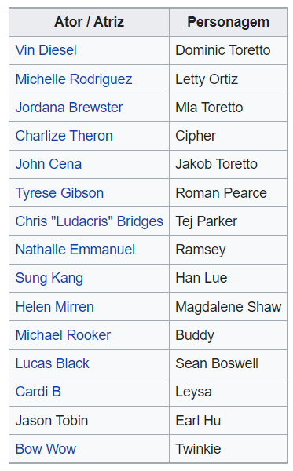
Em 13 de novembro de 2014, a presidente da Universal Pictures, Donna Langley, disse ao The Hollywood Reporter que haveria pelo menos mais três filmes na franquia após Furious 7 (2015).[12] Em fevereiro de 2016, Vin Diesel anunciou as datas iniciais de lançamento do nono e do décimo filme, com o nono filme definido inicialmente para ser lançado em 19 de abril de 2019.[13] Depois que um spin-off foi anunciado com os personagens de Dwayne Johnson e Jason Statham, a data de lançamento do nono filme foi adiada para 10 de abril de 2020.[14]
Em abril de 2017, Diesel e Johnson confirmaram seus retornos. Em 25 de outubro de 2017, Diesel revelou em um vídeo ao vivo no Facebook que Justin Lin, que dirigiu Velozes e Furiosos: Desafio em Tóquio (2006) até Fast & Furious 6 (2013), e a atriz Jordana Brewster, que interpretou Mia Toretto em cinco dos filmes da franquia, voltariam para o nono e o décimo filmes. Em 4 de abril de 2018, Johnson declarou que não tinha certeza se estava voltando para o nono filme devido ao trabalho no spin-off, e confirmou em janeiro de 2019 que não iria aparecer no filme.
Em maio de 2018, Daniel Casey foi contratado para escrever o roteiro depois que Morgan saiu devido ao seu trabalho no filme derivado de Hobbs & Shaw. Michelle Rodriguez também foi confirmada para reprisar seu papel. Em fevereiro de 2019, a Universal Pictures anunciou que estava adiando o filme em seis semanas, o que mudaria a data de lançamento de abril de 2020 para maio de 2020. Foi relatado que o atraso era para que o filme não competisse com a MGM com 007-Sem Tempo para Morrer, que recebeu uma data de lançamento em 8 de abril de 2020.
Em junho de 2019, John Cena foi oficialmente escalado para o filme, após um anúncio inicial de Diesel em abril. Em julho de 2019, Finn Cole, Anna Sawai e Vinnie Bennett se juntaram ao elenco do filme. Nesse mesmo mês, foi anunciado que Helen Mirren e Charlize Theron reprisariam seus papéis. Michael Rooker e o lutador de MMA Francis Ngannou foram adicionados ao elenco em agosto. Em outubro de 2019, Ozuna e Cardi B se juntaram ao elenco do filme. No lançamento do primeiro trailer, foi revelado que os atores Sung Kang e Lucas Black também retornarão. O trailer também revelou a volta do ator Jason Tobin ao papel de Earl Hu, personagem do filme Velozes e Furiosos: Desafio em Tóquio.
A fotografia principal começou em 24 de junho de 2019 no Leavesden Studios em Hertfordshire, Inglaterra. Espera-se que as filmagens ocorram em Los Angeles, Edimburgo e Londres, e também ocorreu na Tailândia pela primeira vez, com Krabi, Ko Pha Ngan e Phuket como locais. Parte do filme também foi filmada em Tbilisi, na Geórgia. a produção encerrou em 11 de novembro do mesmo ano.
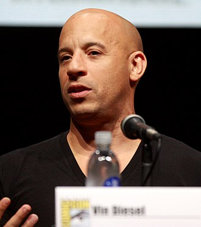
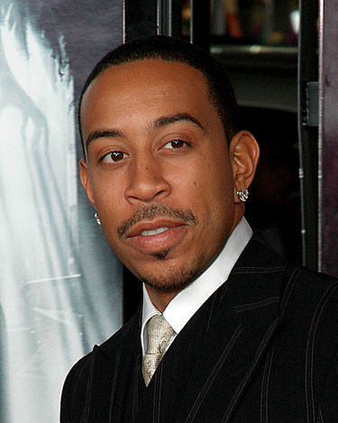
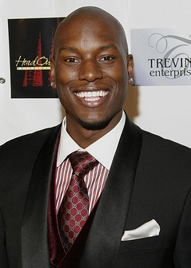
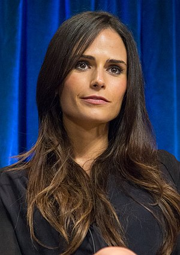
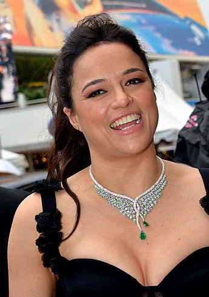
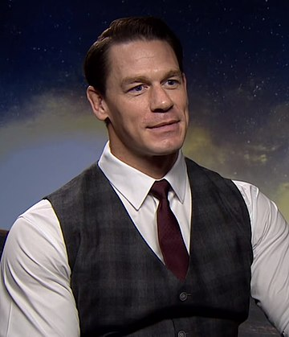
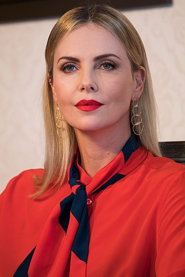
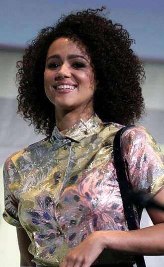
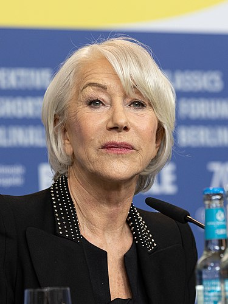
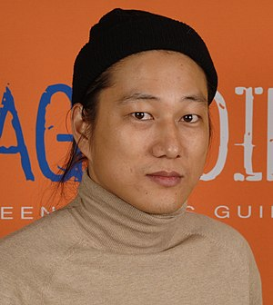
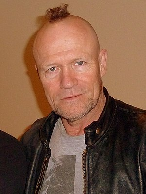
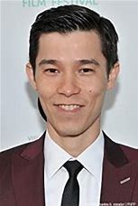